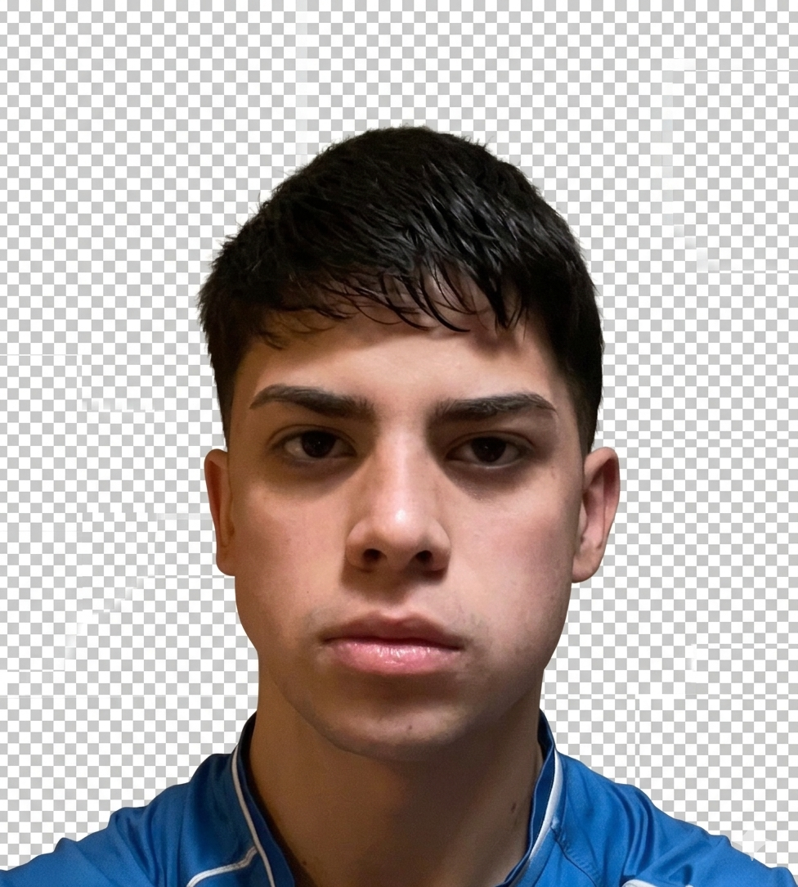

IA y LLMs en el código
Uso LLMs y editores asistidos (Cursor, Claude, Antigravity, ChatGPT, Gemini CLI) para explorar ideas, refactorizar, depurar y documentar, siempre validando el resultado.
Desarrollo Web, Backend y Automatizaciones | IA, LLMs, metodología SDD y MCP

Software Developer junior con enfoque en automatizaciones, desarrollo web, backend y en el uso profesional de IA y LLMs (incluida la conexión MCP y una metodología de trabajo SDD).
Me interesa conectar procesos y sistemas: diseñar flujos que ahorren tiempo, construir aplicaciones y APIs útiles, y seguir profundizando en ingeniería de software.
Trabajo principalmente con JavaScript, Node.js, Java, Spring Boot y bases de datos, desarrollando proyectos web y servicios backend. Me especializo también en IA aplicada y modelos de lenguaje (LLMs): prompts, revisión de respuestas, flujos con agentes y herramientas como Cursor, Claude, ChatGPT, Antigravity y Gemini CLI. Organizo el día a día con metodología SDD (specification-driven): acordar especificaciones, contratos y criterios de aceptación antes y durante el código, con revisiones y trazabilidad, para que el trabajo con IA sea predecible y auditable.
Uso MCP (Model Context Protocol) para conectar el entorno de desarrollo con servicios y datos reales: el asistente accede a documentación, APIs o repositorios de forma controlada, con mejor contexto y menos alucinaciones.
Uso n8n para armar automatizaciones visuales: disparadores, nodos, integraciones con APIs y webhooks, manejo de errores y flujos documentados. Con LLMs y Claude afino el diseño de esos procesos y la integración con el resto del stack.
Actualmente sigo profundizando en automatizaciones, backend, diseño de APIs, bases de datos e infraestructura con Docker, Git y Postman, para entregar soluciones más sólidas y mantenibles.
Construcción de sitios y aplicaciones web con HTML, CSS, JavaScript, TypeScript, Node.js y Python.
Flujos en n8n (integraciones, webhooks, APIs) y LLMs con Cursor, Claude, ChatGPT, Antigravity y Gemini CLI. Metodología SDD en el trabajo diario y MCP para dar contexto fiable a los agentes.
Trabajo con PostgreSQL, MongoDB y herramientas como DBeaver para consultas, modelado y organización de datos.
Uso LLMs y editores asistidos (Cursor, Claude, Antigravity, ChatGPT, Gemini CLI) para explorar ideas, refactorizar, depurar y documentar, siempre validando el resultado.
Trabajo con metodología SDD: parto de especificaciones y criterios claros (flujos, APIs, casos de uso), valido cada entrega contra ellos y dejo decisiones registradas. Con MCP conecto modelos y agentes a fuentes de verdad (docs, APIs, repos) y reduzco trabajo repetitivo.
Diseño y mantengo flujos en n8n: disparadores, nodos, llamadas a APIs, webhooks, transformación de datos y manejo de errores. Complemento con Claude y otras IAs para planificar integraciones, revisar lógica y documentar el flujo de punta a punta.
 Node.js
Node.js
 Python
Python
 PostgreSQL
PostgreSQL
 MongoDB
MongoDB
 Docker
Docker
 React
React
 Vite
Vite
 Astro
Astro
 JavaScript
JavaScript
 TypeScript
TypeScript
 HTML5
HTML5
 Claude
Claude
 Ollama
Ollama
 Gemini CLI
Gemini CLI
 n8n
n8n
 Git
Git
 GitHub
GitHub
 Postman
Postman
Sitios web, landing pages, APIs y servicios backend que complementan tus automatizaciones y procesos digitales.
Consultar proyectoFlujos que conectan herramientas y datos: disparadores, integraciones por API y webhook, transformaciones y manejo de errores para procesos repetibles.
Consultar automatizaciónAcompaño desarrollo y automatizaciones con LLMs, herramientas como Cursor y Claude, conexión MCP para contexto real, y metodología SDD (especificación y validación frente a requisitos acordados).
Consultar propuestaApoyo en consultas, organización de datos, ajustes técnicos y mejoras sobre proyectos web existentes.
Consultar soporteCada proyecto web incluye 1 mes de mantenimiento gratuito. Luego, el costo del mantenimiento mensual se acuerda según el tipo de proyecto o flujo.